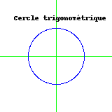
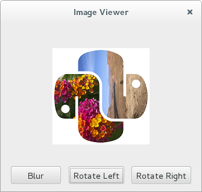

Python Imaging Library (PIL)¶
Par Quentin Vaucher. 1
Introduction¶
Pillow est une bibliothèque de traitement d’image, qui est un fork et successeur du projet PIL (Python Imaging Library). Elle est conçue de manière à offrir un accès rapide aux données contenues dans une image, et offre un support pour différents formats de fichiers tels que PPM, PNG, JPEG, GIF, TIFF et BMP.
Pillow dispose de capacités de traitement d’images relativement puissantes, et a pour but d’offrir une solide base à toute application générale de traitement d’images.
Domaines d’utilisations¶
La bibliothèque de fonctions peut être utilisée pour différents types d’activités, telles que:
- Archivage d’images:
Création de miniatures, conversion d’images d’un format de fichier à un autre, …
- Affichage d’images:
Création et affichage d’images via le module
PIL.ImageTk, ouPIL.ImageWinsous Windows. Ouverture d’une image dans un utilitaire externe via la méthodePIL.Image.Image.show().- Traitement d’images:
Offre un support pour quelques fonctions de bases telles que le filtrage, la convolution ou encore la conversion d’espaces couleurs. Il est également possible de redimensionner et d’appliquer des transformations géométriques à l’image (rotation, …).
Concepts¶
La bibliothèque utilise le principe d’images matricielles (par opposition aux images vectorielles), c’est-à-dire que chaque élément de la matrice représente un point avec une couleur associée (= un pixel). Pillow utilise également les concepts des bandes et de modes décrits ci-dessous:
- Bandes:
Les images sont constituées de bandes de données (une ou plusieurs, pour autant que celles-ci aient toute les mêmes dimensions et profondeurs). Un exemple commun de bandes est celles sous la forme RGBA, qui sépare les informations sur le rouge, le vert, le bleu et la transparence. Il est ainsi possible de réaliser différentes actions qui agissent que sur une seule bande. Finalement, du point de vue des pixels, on peut dire qu’ils disposent tous d’une valeur par bande.
- Modes:
Ils définissent le type et la profondeur des pixels d’une image. Parmi les modes les plus connus, on peut notamment citer RGB et RGBA, qui représentent les pixels sur respectivement 3x8 bits et 4x8 bits.
Exemples¶
Le premier exemple ci-dessous permet dans un premier temps de se familiariser avec le fonctionnement de base de Pillow, puis une fois les bases acquises, un deuxième exemple plus technique met en évidence la puissance de la bibliothèque.
Exemple basique¶
L’exemple suivant aborde de manière simple quelques notions de bases de Pillow. Une image en couleur au format .png est récupérée et convertie en nuances de gris. Le résultat s’affiche puis est sauvegardé au format .jpeg.
open()charge une image en mémoire;Image.convert()change le mode de l’image.Lreprésente \(256\) nuances de gris (voir modes).Image.show()ouvre l’image dans un outil externe;Image.save()sauvegarde l’image dans le format spécifié.
1 2 3 4 5 6 7 8 9 | """Exemple simple de manipulation d'images."""
from PIL import Image
image = Image.open("../../_static/pillow.png")
image = image.convert('L')
image.show()
image.save('gray-pillow.jpeg', 'jpeg')
|
Le résultat obtenu est le suivant:
Exemple technique¶
Dans cet exemple, le logo de la bibliothèque Pillow subit diverses modifications afin de mettre en pratique quelques fonctions de la bibliothèque. Le logo est d’abord flouté à l’aide d’un filtre, puis transposé afin d’inverser la position de chaque python. On parcourt ensuite tous les pixels, puis on colorie l’arrière-plan en étudiant les attributs de chacun d’eux (couleurs et position).
PIL.Image.Image.filter()filtre l’image;PIL.Image.Image.transpose()retourne l’image;PIL.Image.Image.getpixel()récupère les attributs du pixel à la position donnée;PIL.Image.Image.putpixel()modifie les attributs du pixel à la position donnée.
1 2 3 4 5 6 7 8 9 10 11 12 13 14 15 16 17 18 19 20 21 22 23 24 25 26 27 | """Filtrage, transformation, puis coloration."""
from PIL import Image, ImageFilter
img = Image.open("../../_static/pillow.png")
img = img.filter(ImageFilter.BLUR) \
.transpose(Image.FLIP_TOP_BOTTOM) \
.transpose(Image.FLIP_LEFT_RIGHT)
width, height = img.size
WHITE_THRESHOLD = 250
PURPLE = (155, 89, 182)
BLUE = (52, 152, 219)
for x in range(width):
for y in range(height):
pixel = img.getpixel((x, y))
# On vérifie que le pixel est blanc
if all(channel > WHITE_THRESHOLD for channel in pixel):
if x + y <= width:
img.putpixel((x, y), PURPLE)
else:
img.putpixel((x, y), BLUE)
img.show()
|
Le résultat obtenu est le suivant:
Manipulation des bandes¶
Pillow utilise le concept des bandes de données, qu’il est possible de traiter séparément. L’exemple suivant illustre cette notion, en inversant l’ordre des bandes R, G et B.
PIL.Image.Image.split()retourne un tuple contenant toutes les bandes de l’image;PIL.Image.merge()fusionne un ensemble d’images monobande en une image multibandes.
1 2 3 4 5 6 7 8 9 10 11 | """Inversion des bandes (r, b, g) d'une image."""
from PIL import Image
image = Image.open("../../_static/pillow.png")
r, g, b, a = image.split()
image = Image.merge("RGBA", (b, r, g, a))
image.show()
|
Le résultat obtenu est le suivant:
Méthodes de dessin¶
Pillow fournit également des outils de base pour le graphisme 2D. Toutes ces fonctions sont regroupées dans le module PIL.ImageDraw. Il est possible de dessiner diverses formes géométriques, ainsi que du texte, dans le but de créer ou retoucher des images. L’exemple suivant met en évidence quelques-unes des fonctionnalités disponibles.
PIL.Image.new()crée une image avec la taille et la couleur spécifiée;PIL.ImageDraw.Drawcrée un objet qui peut être utilisé pour dessiner sur l’image;PIL.ImageDraw.Draw.linedessine une ligne entre les points donnés, avec la couleur choisie;PIL.ImageDraw.Draw.ellipsedessine une ellipse à l’intérieur du rectangle donné;PIL.ImageDraw.Draw.textdessine du texte à l’endroit choisi.
1 2 3 4 5 6 7 8 9 10 11 12 13 14 15 16 17 18 19 20 21 22 23 24 25 26 27 28 29 30 31 32 | """Graphisme 2D avec Pillow."""
from PIL import Image, ImageDraw
width = 160
height = 160
WHITE = (255, 255, 255, 0)
image = Image.new('RGBA', (width, height), WHITE)
# Obtention du contexte graphique
draw = ImageDraw.Draw(image)
GREEN = (0, 255, 0, 0)
draw.line((0, height//2,
width, height//2),
fill=GREEN)
draw.line((width//2, 0,
width//2, height),
fill=GREEN)
BLUE = (0, 0, 255, 0)
draw.ellipse((width//4, height//4,
3*width//4, 3*height//4),
outline=BLUE)
BLACK = (0, 0, 0, 0)
draw.text((20, 20), "Cercle trigonométrique", fill=BLACK)
image.show()
image.save("cercleTrigo.png", "png")
|
Le résultat obtenu est le suivant:
Utilisation au sein du binding PyQt¶
Pillow fournit le module PIL.ImageQt afin de créer des Qimage directement utilisables par le binding PyQt. En effet, le module dispose d’une classe du même nom qui est une sous-classe de QtGui.QImage. Il est donc possible de passer l’objet directement à l’API PyQt. On peut donc utiliser la puissance de Pillow pour réaliser du traitement d’images au sein d’un logiciel graphique utilisant le Framework Qt.
Le code suivant illustre un telle utilisation, permettant à l’utilisateur de visualiser une image, de la tourner et de la flouter. Le traitement de l’image est réalisé à l’aide de Pillow, tandis que l’interface utilisateur utilise l’api PyQt. La fonction initUI() n’est pas présentée car elle ne sert qu’à mettre en place les différents composants visuels.
1 2 3 4 5 6 7 8 9 10 11 12 13 14 15 16 17 18 19 20 21 22 23 24 25 26 27 28 29 30 31 32 33 34 35 36 37 38 39 40 41 42 43 44 45 46 47 48 49 50 51 52 53 54 55 56 57 58 59 60 61 62 63 | """Manipulation d'une image graphiquement à l'aide de PyQt."""
import sys
from PIL import Image, ImageFilter, ImageQt
from PyQt5.QtGui import QPixmap
from PyQt5.QtWidgets import (QApplication, QHBoxLayout, QLabel, QPushButton,
QVBoxLayout, QWidget)
class Viewer(QWidget):
"""Affiche une image avec trois boutons pour la pivoter/flouter."""
def __init__(self):
"""Initialisation des composants, connexion signaux/slots."""
super().__init__()
self.blurButton = QPushButton("Blur")
self.rotateLeftButton = QPushButton("Rotate Left")
self.rotateRightButton = QPushButton("Rotate Right")
self.label = QLabel()
self.image = Image.open("../../_static/pillow.png")
self.initUI()
self.displayImage()
self.blurButton.clicked.connect(self.blurImage)
self.rotateLeftButton.clicked.connect(self.turnLeft)
self.rotateRightButton.clicked.connect(self.turnRight)
def displayImage(self):
"""PIL Image -> QImage -> QPixmap.
Convertit une image de la bibliothèque PIL en QImage. Convertit
l'objet QImage en QPixmap puis affiche le résultat dans un label.
"""
self.label.setPixmap(QPixmap.fromImage(ImageQt.ImageQt(self.image)))
def turnLeft(self):
"""Tourne l'image à gauche à l'aide de PIL puis affiche le résultat."""
self.image = self.image.rotate(90)
self.displayImage()
def turnRight(self):
"""Tourne l'image à droite à l'aide de PIL puis affiche le résultat."""
self.image = self.image.rotate(-90)
self.displayImage()
def blurImage(self):
"""Floute l'image à l'aide de PIL puis affiche le résultat."""
self.image = self.image.filter(ImageFilter.BLUR)
self.displayImage()
if __name__ == '__main__':
app = QApplication(sys.argv)
viewer = Viewer()
viewer.resize(450, 400)
viewer.setWindowTitle('Image Viewer')
viewer.show()
sys.exit(app.exec_())
|
Le résultat obtenu est le suivant:
Conclusion¶
Pillow est une bibliothèque relativement complète qui offre la possibilité de manipuler des images avec une grande simplicité. Elle dispose d’une large palette de fonctions qui touche à différents domaines allant du filtrage au graphisme, en passant par la manipulation de pixels.
La bibliothèque se positionne donc plutôt comme une bibliothèque à vocation généraliste dans le domaine du traitement d’images, et ne se démarque donc dans aucun domaine spécifique.
Pour conclure, les quelques exemples abordés dans cet article offrent un bon aperçu du fonctionnement de Pillow, mais ne couvrent en aucun cas toutes ses possibilités. Pour une liste plus exhaustive et plus détaillée, la documentation officielle semble être la candidate idéale.